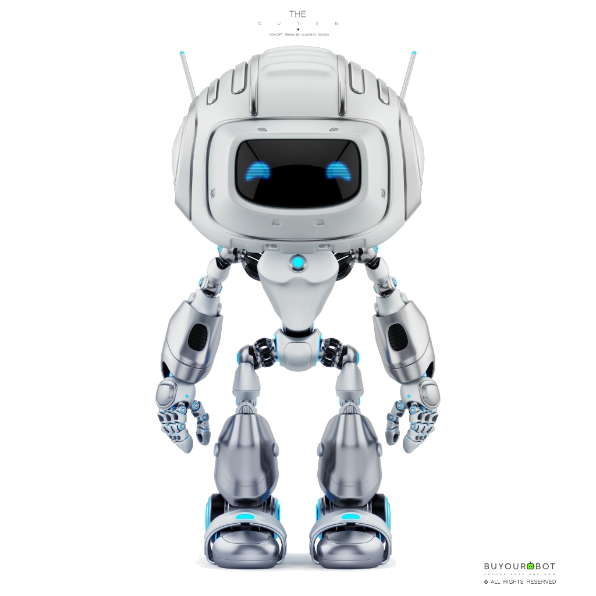
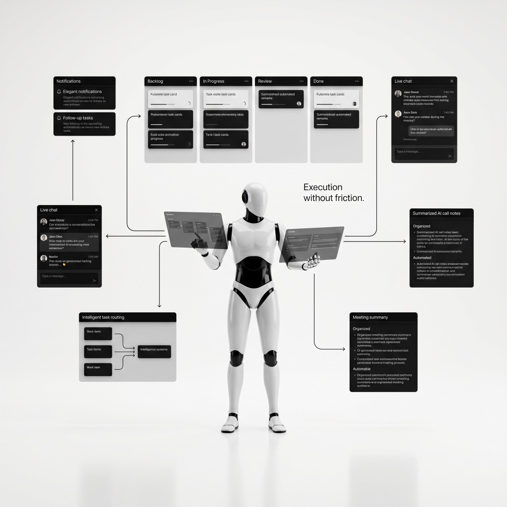

Intelligent CRM
A completely redesigned approach to SEO management, featuring 27 powerful tools, intelligent AI pipelines, and real-time collaboration for your entire team.
Click anywhere to explore Tap anywhere to explore
"It begins before they even sign. The AI autonomously researches prospects, drafts hyper-personalized outreach, and seamlessly onboards new clients. From scanning business cards to signing digital contracts, the first impression is flawless."
Click anywhere to continue

"Once aboard, chaos becomes order. Every project flows through an intelligent pipeline. Admins and clients share a tailored, real-time command center that oversees the entire lifecycle, instantly reacting to events via 15+ webhooks."
Click anywhere to continue

"Drag-and-drop Kanban boards meet real-time WebSocket chat. The AI listens to your client calls, automatically generating summaries, remarks, and follow-up tasks—completing the lifecycle."
A seamless pipeline powering intelligent automation.
AI automatically scrapes and identifies high-value SEO prospects from the web.
GPT-4 processes the scraped data to find unique pain points and keyword gaps.
Hyper-personalized bilingual emails are generated and dispatched automatically.
Global visibility, team management, billing controls, and full AI pipeline access. Complete command over your agency's operations.
Focused task execution, client communication, and project milestone updates. Streamlined access to what matters.
Beautiful self-service portal for paying invoices, tracking project progress, uploading files, and requesting new services.
Restricted access to view tailored proposals, review custom SEO audits, and securely accept quotes.
Join the agencies already using SERP Hawk to automate their entire workflow and deliver superior SEO results.